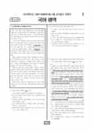

문제지

2025학년도 6월 모의평가 · 2024년 6월 시행
2025학년도 6모 국어 언어와매체 1등급컷은 원점수 84점(추정), 표준점수 최고점은 148점입니다.
원점수 1등급컷은 공식 발표값이 아니라 EBSi·입시기관 값입니다. 등급별 값은 등급컷 표, 출처 구분은 데이터 원칙에 있습니다.

시험지를 먼저 풀어 보세요. 등급컷·표준점수·난이도는 흐리게 가려 뒀어요.
| 등급 | 원점수 | 표준점수 | 백분위 | 누적 |
|---|---|---|---|---|
| 1 | 84 | 132 | 96 | 4.6% |
| 2 | 77 | 125 | 89 | 11.55% |
| 3 | 69 | 117 | 78 | 23.12% |
| 4 | 59 | 107 | 60 | 41.03% |
| 5 | 48 | 95 | 39 | 61.3% |
| 6 | 36 | 83 | 23 | 77.9% |
| 7 | 25 | 72 | 11 | 89.21% |
| 8 | 18 | 66 | 4 | 96.38% |
등급별 컷 · 입시기관 3곳 원점수 추정 종합(이투스·종로학원·대성마이맥) · 공통+선택 점수 조합에 따라 다를 수 있음 · 만점 100점
정답 변경 없음
이의신청 11문항
시험 전체 관련 보도 4건은 2025학년도 6월 모의평가 회차 페이지에 모아 두었어요.
EBSi 응답자 기준으로 가장 많이 틀린 문항은 16번(3점)이고, 오답률은 74.7%입니다. 상위 15문항 중 3문항은 정답보다 한 오답을 고른 사람이 더 많았습니다(16번: 정답 ① 25.3%, ④ 26.1%). 오답률 50%를 넘은 문항은 11개입니다.
| 순위 | 문항 | 배점 | 오답률 | 정답 | 많이 고른 오답 |
|---|---|---|---|---|---|
| 1 | 16번 | 3점 | 74.7% | ① | ④ 26.1% |
| 2 | 9번 | 2점 | 74.4% | ① | ② 34.8% |
| 3 | 36번 | 3점 | 73.2% | ⑤ | ② 27.2% |
| 4 | 15번 | 2점 | 71.3% | ① | ④ 22.1% |
| 5 | 34번 | 3점 | 64.1% | ③ | ④ 27.4% |
| 6 | 13번 | 2점 | 61.2% | ⑤ | ③ 21% |
| 7 | 7번 | 3점 | 61% | ① | ③ 26.7% |
| 8 | 12번 | 2점 | 56.5% | ④ | ⑤ 23.2% |
| 9 | 37번 | 2점 | 55.9% | ① | ④ 24.4% |
| 10 | 29번 | 2점 | 53.7% | ④ | ⑤ 15.9% |
| 11 | 27번 | 2점 | 52% | ② | ⑤ 23.3% |
| 12 | 21번 | 3점 | 48.5% | ④ | ① 14% |
| 13 | 20번 | 2점 | 47.7% | ③ | ④ 24.1% |
| 14 | 14번 | 2점 | 44.8% | ④ | ③ 16.9% |
| 15 | 31번 | 2점 | 40.1% | ⑤ | ③ 12.1% |
EBSi 가채점 응답자 기준 · 전 문항 중 오답률 상위 15문항
출처: EBSi 역대 등급컷·오답률 공개 화면. 가채점에 참여한 EBSi 이용자 응답이라 전체 응시자 정답률과는 다를 수 있습니다.
발행 기관: 한국교육과정평가원(KICE). 파일 위치: 이 사이트가 보관한 사본. 저작권은 발행 기관에 있습니다. 원본과 다르거나 게시 중단이 필요하면 연락처로 알려 주세요. 등급컷 출처 구분은 데이터 원칙에서 설명합니다.
막대 색은 역대 대비 난이도 · 진한 막대가 이 시험 · 막대를 누르면 그 회차로 이동
공통과목 독서는 여러 글을 종합하며 읽는 다문서 읽기를 다룬 독서론(1~3번), 정치 조직과 기업 경영에서 나타나는 과두제와 그 폐해를 줄이는 스톡옵션·경영 공시·사외 이사 제도를 다룬 사회 지문(4~7번), 과산화물 개시제로 에틸렌을 중합해 폴리에틸렌을 만드는 과정을 다룬 과학 지문(8~11번), 도덕 문장이 감정이나 태도를 표현한다고 본 에이어의 견해와 이를 전건 긍정식의 타당성 문제로 비판하는 논의를 묶은 주제 통합형 인문 지문(12~17번)으로 구성되었습니다.
가장 어려웠던 것은 12~17번입니다. 16번(3점, 74.7%)은 '태도에 대한 태도'로 조건문을 설명하는 <보기>를 윗글과 비교하는 문항, 15번(2점, 71.3%)은 몇몇 논리학자들이 제기한 문제(㉠)를 이해하는 문항으로, 둘 다 오답률이 70%를 넘었습니다. 과학 지문의 9번(2점, 74.4%)도 중합 과정에서 불안정한 탄소 원자가 생기고 사슬이 성장·종결되는 단계를 정확히 따라가야 해 응답의 34.8%가 한 오답에 몰렸습니다.
문학은 작자 미상의 고전소설 「이대봉전」(18~21번), 작자 미상의 가사 「우부가」와 성현의 고전 수필 「타농설」(22~26번), 임철우의 현대소설 「아버지의 땅」(27~30번), 이기철 「청산행」과 김현승 「사실과 관습: 고독 이후」를 묶은 현대시(31~34번)로 구성되었습니다.
입시기관들은 작품 자체는 비교적 익숙했지만 문항 난도는 지난해 수능과 비슷했다고 평가했습니다. 특히 「아버지의 땅」에서 두 소재의 서사적 기능을 비교하는 28번, ㉮와 ㉯를 비교하는 29번, <보기>의 관점으로 두 현대시를 감상하는 34번이 까다로웠다는 평가입니다.
언어와 매체는 지칭어와 호칭어, 그리고 대상을 알지 못함을 나타내는 미지칭과 대상이 정해지지 않은 부정칭을 다룬 지문(35~36번)으로 시작했습니다. 36번(3점, 73.2%)은 가족 대화 속 호칭 ㉮~㉳를 통해 지문의 ㉠~㉤을 설명하는 문항으로, 언어와 매체 응시자 기준 선택과목 문항 가운데 오답률이 가장 높았습니다.
서술어가 필수적으로 요구하는 문장 성분을 비교하는 37번, 우리말을 한자로 적는 차자 표기의 방식을 '水'를 예로 응용하는 39번처럼 낯선 형식의 문항이 있었고, 매체는 독도 바다사자 복원 사업을 다룬 뉴스와 시청자 게시판(40~42번) 등이 출제되었습니다. 선택과목 표준점수 최고점은 148점이었습니다.
이 회차의 12~17번처럼 인문 지문이 논리학 개념(전건 긍정식, 타당성)을 끌어오는 경우, 개념의 정의를 지문 여백에 짧게 적어 두고 선택지마다 그 정의에 대입해 보는 습관이 도움이 됩니다. 같은 해 9월에는 국어 최고점이 129점으로 크게 떨어졌다가 수능에서 139점으로 다시 올랐으므로, 쉬운 회차와 어려운 회차를 함께 풀며 시간 배분을 조절해 보는 것이 좋습니다. 시험 전체 흐름은 이 회차의 회차 해설에 정리했습니다.